Đằng sau bộ nồi sứ dưỡng sinh là tâm huyết của bao nghệ nhân Minh Long cùng giấc mơ giúp người Việt có được phương pháp nấu ăn tốt cho sức khỏe, hướng đến lối sống lành mạnh.
Ý tưởng về nồi sứ dưỡng sinh sớm đã nhen nhóm trong ông Lý Ngọc Minh (Tổng giám đốc Công ty TNHH Minh Long I) từ thời niên thiếu, trong chính căn bếp nhỏ thân thuộc của mẹ. Dù trở thành “vua gốm sứ Việt Nam”, đi khắp nơi trên thế giới và trải nghiệm nhiều nền văn hóa khác nhau, ông chưa bao giờ quên hương vị từ những món ăn dân dã được mẹ nấu trong chiếc nồi đất. Duy chỉ có một trăn trở rằng nồi đất nấu ăn ngon nhưng dễ nứt, vỡ và sinh nấm mốc. Vì lẽ đó, suốt những năm tháng thơ ấu đến khi trở thành nhà điều hành Công ty Gốm sứ Minh Long, ông luôn ấp ủ giấc mơ chế tác một chiếc nồi vừa nấu ăn ngon, vừa bền chắc, an toàn. Hành trình 14 năm ấp ủ, chế tác ra chiếc nồi sứ dưỡng sinh đã bắt đầu từ đây.
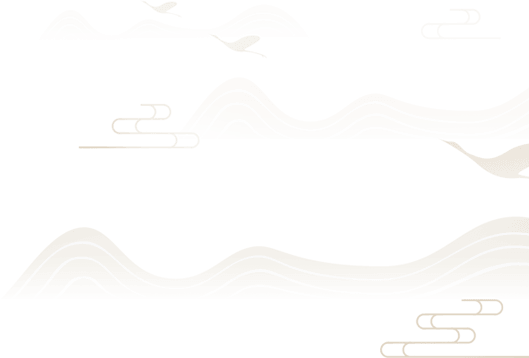
Trong hơn một thập kỷ, việc chế tác nồi sứ dưỡng sinh được ông Minh ví như bài toán đầy thách thức. Để giải được bài toán ấy, ông cùng các cộng sự phải dành nhiều năm nghiên cứu từng công đoạn, từ chọn nguyên liệu, tìm công thức phối kết, tạo hình, nung đến tráng men, và trải qua hàng trăm lần thử nghiệm, đánh giá khác nhau.
01.
NGUYÊN LIỆU
QUÝ HIẾM
Nguyên liệu để chế tác nồi sứ dưỡng sinh đến từ 10 loại đất, đá, khoáng sản do chính tay ông Lý Ngọc Minh tuyển chọn từ nhiều nơi trên thế giới. Mỗi nguyên liệu đều có tính năng đặc biệt, mang đến độ dẻo, sự kết dính, chống giãn nở, chống co rút cao hay cấu trúc đan xen liên kết bền chặt.
02.
CÔNG THỨC
PHỐI KẾT CHUẨN
Đội ngũ nghiên cứu Minh Long đã thực hiện hàng nghìn thử nghiệm khác nhau để tìm công thức phối kết chuẩn nhất cho các nguyên liệu quý tìm được. Chất liệu tạo ra từ công thức này giữ được tính năng tự nhiên và đảm bảo an toàn cho sức khỏe người dùng.
03.
CÔNG NGHỆ
TẠO HÌNH HIỆN ĐẠI
Từ chất liệu phối kết theo công thức chuẩn, nồi sứ dưỡng sinh được tạo hình bằng hệ thống máy móc kỹ thuật cao đến từ Mỹ, Đức, Anh, Pháp, Nhật Bản… Nhờ vậy, mỗi sản phẩm thành hình có kết cấu kỹ thuật chuẩn xác, đồng đều về kích cỡ và có tính thẩm mỹ cao.
04.
QUY TRÌNH NUNG
NGHIÊM NGẶT
Quy trình nung nồi sứ dưỡng sinh được Minh Lontg thiết lập khắt khe, nghiêm ngặt. Sản phẩm nung ở 1.280 độ C.
Trải qua quy trình nung, sản phẩm có khả năng chịu nhiệt độ toàn phần cao đến 800 độ C (tại điều kiện phòng thí nghiệm), không bị bung, rạn men; khó bể vỡ.

05.
MEN SỨ CÓ
KHẢ NĂNG ĐẶC BIỆT
Ngoài thân nồi kết cấu từ đất hiếm, men sứ cũng có khả năng chống rạn nứt, chống dính, chống trầy tốt. Với chất men này, sản phẩm khoác lên màu sắc tự nhiên và bắt mắt hơn. Đặc biệt, men sứ dưỡng sinh có khả năng phát ra bức xạ hồng ngoại.
Thử nghiệm thất bại thì bắt đầu lại, cứ thế trong suốt 14 năm, khó đếm được công sức và tâm huyết Minh Long dành cho mỗi công đoạn để cho ra đời sản phẩm đạt chất lượng như ý.
Kết quả, nồi sứ dưỡng sinh Minh Long ra đời, không chỉ khắc phục được hạn chế của nồi đất hay nồi gốm thông thường, mà còn mang đến nhiều lợi ích cho sức khỏe.
Các loại nồi đất, gốm thông thường chủ yếu được làm từ gốm đất đỏ, gốm dạng sành và gốm bán sứ. Gốm đất đỏ được nung ở 900 độ C, có độ hút nước 20-30% nên rất dễ nứt vỡ.
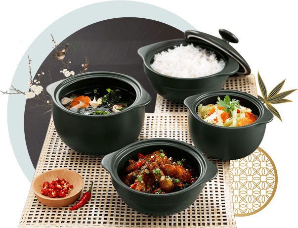
Gốm dạng sành được nung ở 1.200 độ C, độ hút nước khoảng 10-15%, bền hơn gốm đất đỏ nhưng vẫn dễ rạn men và bể vỡ. Gốm bán sứ có độ bền cao hơn do được nung ở 1.250 độ C, tuy nhiên độ hút nước vẫn ở mức 7-8%, nên vẫn dễ sinh nấm mốc sau thời gian dài sử dụng.
Trong khi đó, sứ dưỡng sinh của Minh Long được nung ở 1.280 độ C, chịu được độ sốc nhiệt toàn phần đến 800 độ C (độ sốc nhiệt tối đa của nhiều loại gốm bán sứ cao cấp hiện nay chỉ ở 650 độ C).
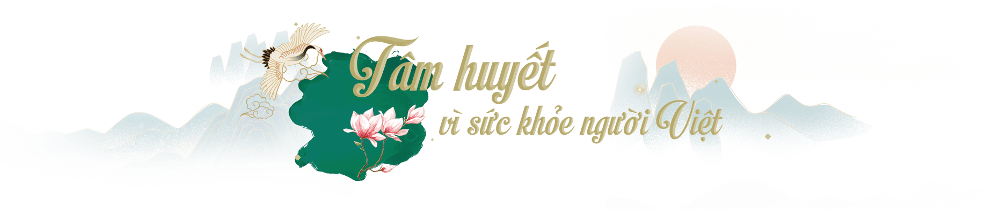
Chia sẻ về bộ nồi sứ dưỡng sinh, ông Lý Ngọc Minh dành nhiều tâm huyết: “Khi làm bộ nồi này, tôi có một tâm niệm rằng tất cả người dân đều nhận được nhiều dưỡng chất hơn trong mỗi món ăn, được nâng cao hệ miễn dịch để khỏe mạnh. Nhờ đó, cả đất nước sẽ đỡ tốn hàng trăm nghìn tỷ đồng cho viện phí, thuốc men. Có khỏe thì con người mới có sự sáng suốt, trí tuệ để lao động, sáng tạo giúp đất nước phát triển”.
Từ tâm niệm của người đứng đầu Minh Long, bộ nồi được dày công nghiên cứu để thiết lập cơ chế nấu chín thực phẩm đặc biệt - phát tia hồng ngoại theo quá trình thu - tỏa - giữ nhiệt, mang đến nhiều lợi ích cho sức khỏe người dùng.
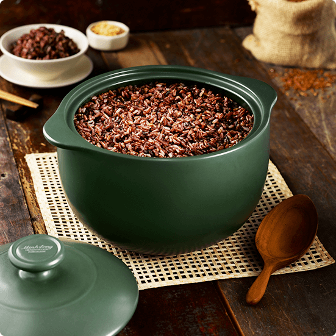
Dựa trên cơ chế bức xạ hồng ngoại cùng hình dáng tạo tác theo khí động học, nồi sứ dưỡng sinh phân bổ nhiệt độ đều khắp thân, từ đáy đến hông. Nhờ đó, thực phẩm chín nhanh, sâu và đều.
• Thực phẩm không bị phá vỡ cấu trúc, bảo toàn hàm lượng dinh dưỡng, giữ được nhiều vitamin, khoáng chất.
• Thức ăn giữ màu sắc tự nhiên bắt mắt cùng hương vị thơm ngon, thuần khiết.
• Người dùng có thể luộc hấp không cần dùng nước. Thức ăn chín nhanh, đều và sâu từ bên trong, giúp tiết kiệm thời gian, nhiên liệu nấu nướng.
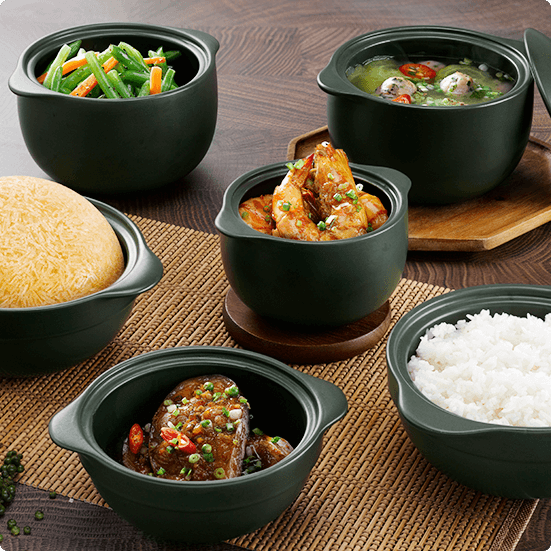
Nồi sứ dưỡng sinh nung ở nhiệt độ cao nên trơ, không hút ẩm, hút nước, không bị xâm thực bởi axit và kiềm trong thực phẩm. Được tạo nên từ đất hiếm, nên nồi sứ dưỡng sinh không chứa chì như nồi kim loại.
• Thức ăn không bị biến chất do sản sinh hay nhiễm các chất độc hại. Nhờ đó, người dùng có thể an tâm ngăn ngừa ung thư hay một số loại bệnh nguy hiểm khác.
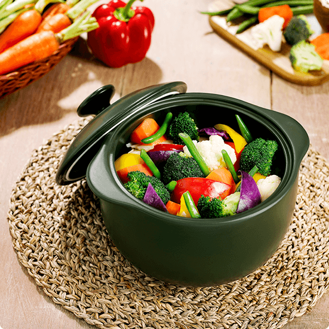
Khi chiên thực phẩm, nồi sứ dưỡng sinh chỉ duy trì dưới 135 độ C. Trong khi đó, nồi kim loại có thể sản sinh nhiệt đến 150-180 độ C.
• Thực phẩm chiên ở nhiệt độ thấp sẽ hạn chế lượng độc tố tích tụ, mang đến nhiều lợi ích cho sức khỏe tim mạch. Đồng thời, thức ăn vàng đều và giòn lâu. Dầu ăn sau đó có thể sử dụng lại.
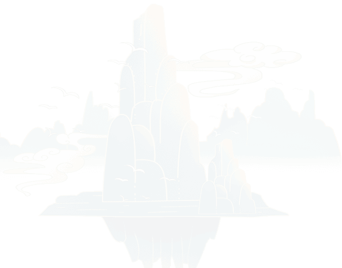
Với nhiều lợi ích cho sức khỏe, Minh Long kỳ vọng nồi sứ dưỡng sinh có thể thay đổi phương thức nấu nướng của người dùng Việt. Thương hiệu gốm sứ hướng người dùng đến cách chế biến món ăn ở nhiệt độ thấp, từ đó giữ được hương vị thơm ngon và tốt cho sức khỏe. Đây là một phần trong phương pháp sống dưỡng sinh, chú trọng thực phẩm đủ dinh dưỡng, chế độ ăn uống lành mạnh và loại bỏ mọi độc tố.
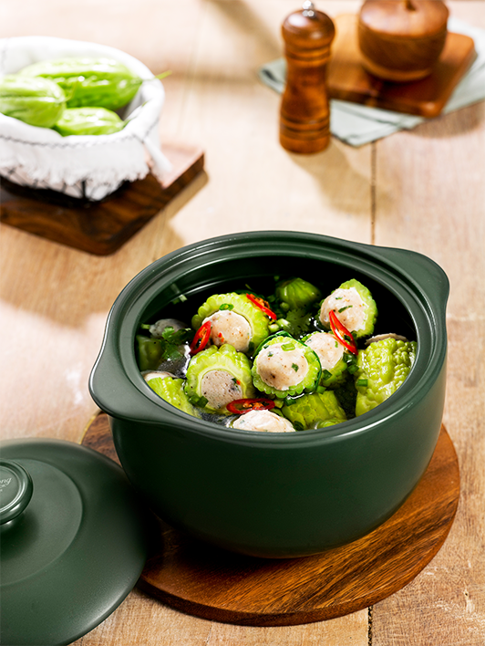
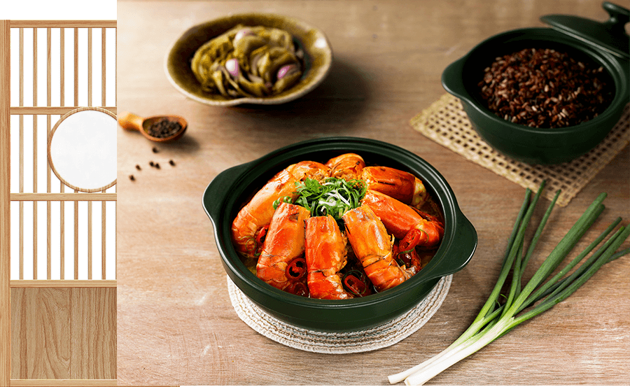
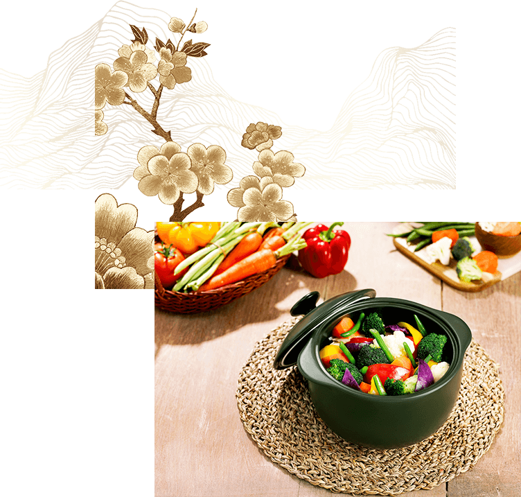
Những lợi ích mà nồi sứ dưỡng sinh có được không chỉ nhờ vào kỹ thuật chế tác vượt trội của Minh Long, mà còn đến từ kiến thức mà “ông vua gốm sứ” đúc kết sau nhiều năm áp dụng lối sống dưỡng sinh. Với ông Minh, thức ăn là thuốc. Mỗi người đều có thể kiểm soát được những gì dung nạp vào cơ thể bằng cách chọn thực phẩm sạch, cách chế biến tốt và chất liệu nấu nướng an toàn cho sức khỏe.
“Trong lĩnh vực của mình, tôi mong muốn người tiêu dùng phát huy lối sống sạch, sống khỏe bắt đầu từ việc xây dựng thói quen ăn uống lành mạnh tại nhà, bằng những bộ nồi có tính năng dưỡng sinh, có nguồn gốc rõ ràng, chất lượng được kiểm định và đạt chuẩn”.
Ông Lý Ngọc Minh
Gần 3 năm có mặt trên thị trường, Minh Long tiếp tục cho thấy nỗ lực trong việc thay đổi thói quen nấu nướng của người dùng Việt. Giờ đây, bên cạnh nồi sứ dưỡng sinh nấu bằng bếp gas, người dùng có thể tìm thấy bộ sản phẩm sử dụng cho bếp hồng ngoại và lò nướng. Các bộ nồi cũng có kích thước ngày càng đa dạng, hướng đến nhiều đối tượng khách hàng và đáp ứng hầu hết nhu cầu nấu nướng.
Trong đó, bộ nồi sứ dưỡng sinh dành cho lò nướng phù hợp với các gia đình trẻ, người độc thân bận rộn, không có nhiều thời gian nấu ăn. Bộ sản phẩm này gồm có loại 6 nồi và 4 nồi, cho phép người dùng nấu được nhiều món cùng lúc. Người dùng chỉ cần cho gạo vo sẵn, thức ăn đã sơ chế, nêm nếm vào nồi sứ dưỡng sinh, đậy kín nắp và cho tất cả vào lò nướng. Sau đó, người dùng chỉ cần cài đặt thời gian theo hướng dẫn mà không cần can thiệp gì thêm, có thể dành thời gian nghỉ ngơi hay vui đùa cùng con cái.
Nhờ bộ nồi sứ dưỡng này, dù không bỏ nhiều thời gian hay công sức nấu nướng, người dùng vẫn có được mâm cơm đầy đủ dưỡng chất cho cả gia đình với cơm, canh, rau luộc, cá kho…
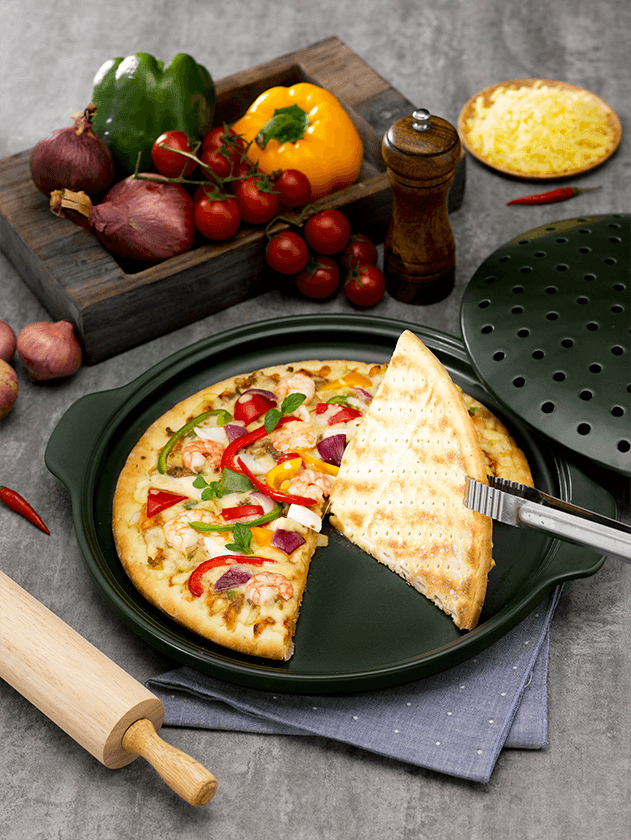
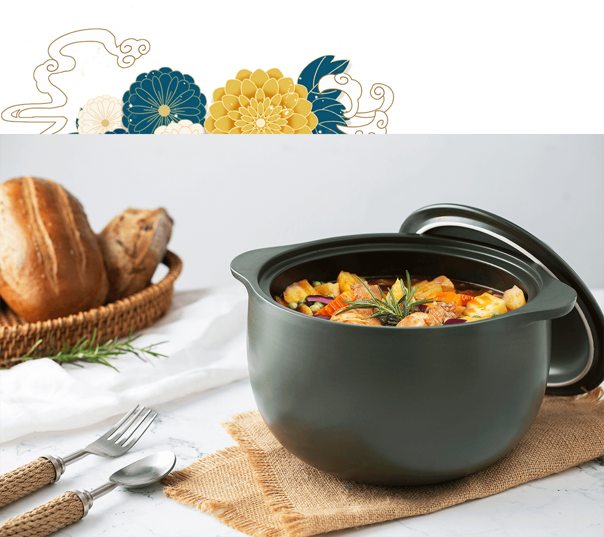
1/ Đặt nồi dưỡng sinh trên bếp như thế nào để thu nhiệt tốt nhất?
Vùng phát nhiệt của bếp nên chiếm tối thiểu 80% diện tích đáy nồi. Trong đó, vùng phát nhiệt của bếp từ, bếp hồng ngoại là vòng tròn trên mặt bếp; còn bếp gas là các vòng lửa.
2/ Trong quá trình nấu ăn bằng nồi sứ dưỡng sinh cần điều chỉnh lửa ra sao?
Ban đầu, người dùng nên đặt nồi trên bếp ở mức nhiệt độ nhỏ, chủ yếu để làm nóng, sau vài phút thì bật lửa lớn. Đến khi hơi nước bốc mạnh, người dùng nên điều chỉnh lửa thấp lại để tiết kiệm năng lượng, nhiên liệu. Lúc này trong nồi đã diễn ra quá trình tỏa nhiệt bằng bức xạ hồng ngoại.
3/ Nồi sứ dưỡng sinh có được phân loại theo công dụng hay món ăn?
Kích cỡ, kiểu dáng nồi sứ dưỡng sinh được thiết kế để nấu nướng đa năng. Người dùng có thể sử dụng nồi sứ dưỡng sinh để luộc rau củ, hấp hải sản, kho thịt cá, nấu cơm, chiên, sắc thuốc… Ngoài ra, người dùng cần dựa trên số lượng người ăn, thực phẩm để chọn nồi phù hợp.
4/ Có nên đậy nắp khi nấu ăn bằng nồi sứ dưỡng sinh?
Khi chế biến thức ăn bằng nồi sứ dưỡng sinh nên đậy nắp. Bởi vì, đậy nắp sẽ giảm bớt được lượng nhiệt (giảm bớt lửa, năng lượng), để mùi thơm của thức ăn không bị bay đi, các dưỡng chất được giữ nguyên và không bị phá hủy.
Khi đậy nắp nồi sứ dưỡng sinh, nước không bị đục như khi nấu bằng nồi kim loại thông thường, vì không bị kiềm hay axit có trong thức ăn xâm thực. Nhờ đó, món ăn sau khi nấu chín mới có hương vị thơm ngon, đậm đà.